건설재료시험기사 (2021-03-07 기출문제)
1과목: 콘크리트공학
1. 수중 콘크리트에 대한 설명으로 틀린 것은?
- 수중 콘크리트를 시공할 때 시멘트가 물에 씻겨서 흘러나오지 않도록 트리메나 콘크리트 펌프를 사용해서 타설하여야 한다.
- 수중 콘크리트를 타설할 때 완전히 물막이를 할 수 없는 경우에는 유속은 50mm/s 이하로 하여야 한다.
- 일반 수중 콘크리트는 수중에서 시공할 때의 강도가 표준공시체 강도의 1.2~1.5배가 되도록 배합강도를 설정하여야 한다.
- 수중 콘크리트의 비비는 시간은 시험에 의해 콘크리트 소요의 품질을 확인하여 정하여야 하며, 강제식 믹서의 경우 비비기 시간은 90~180초를 표준으로 한다.
(정답률: 57%)

2. 프리스트레싱할 때의 콘크리트 강도에 대한 아래 설명에서 ( )안에 알맞은 수치는?
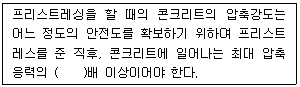
- 1.5
- 1.7
- 2.0
- 2.5
(정답률: 79%)
3. 섬유보강 콘크리트에 대한 설명으로 틀린 것은?
- 섬유보강 콘크리트 1m3중에 포함된 섬유의 용적 백분율(%)을 섬유 혼입률이라고 한다.
- 보강용 섬유를 혼입하여 주로 인성 균열억제, 내충격성 및 내마모성 등을 높인 콘크리트를 섬유보강 콘크리트라고 한다.
- 섬유보강 콘크리트의 비비기에 사용하는 믹서는 가경식 믹서를 사용하는 것을 원칙으로 한다.
- 섬유보강 콘크리트의 배합은 소요의 품질을 만족하는 범위 내에서 단위수량을 될 수 있는 대로 적게 되도록 정하여야 한다.
(정답률: 73%)
4. 콘크리트의 크리프(creep)에 대한 설명으로 틀린 것은?
- 조강 시멘트는 보통 시멘트보다 크리프가 크다.
- 재하기간 중의 대기의 습도가 낮을수록 크리프가 크다.
- 응력은 변화가 없는데 변형은 시간에 따라 증가하는 현상을 크리프라 한다.
- 물-시멘트비가 큰 콘크리트는 물-시멘트비가 작은 콘크리트보다 크리프가 크게 일어난다.
(정답률: 59%)
5. 굳지 않은 콘크리트의 워커빌리티를 측정하기 위한 시험 방법이 아닌 것은?
- 슬럼프 시험
- 구관입 시험
- Vee-Bee 시험
- Vicat 장치에 의한 시험
(정답률: 65%)
6. 콘크리트 타설 및 다지기 작업에 대한 설명으로 틀린 것은?
- 타설한 콘크리트를 거푸집 안에서 횡방향으로 이동시켜서는 안 된다.
- 연직 시공일 때 슈트 등의 배출구와 타설면까지의 높이는 1.5m이하를 원칙으로 한다.
- 내부진동기를 사용하여 진동다지기를 할 경우 삽입간격은 1.0m이하로 하는 것이 좋다.
- 내부진동기를 사용하여 진동다지기를 할 경우 내부진동기를 하층의 콘크리트 속으로 0.1m정도 찔러 넣는다.
(정답률: 70%)
7. 현장 배합에 의한 재료량 및 재료의 계량값이 아래의 표와 같을 때 계량오차를 초과하여 불합격인 재료는?(오류 신고가 접수된 문제입니다. 반드시 정답과 해설을 확인하시기 바랍니다.)
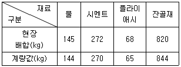
- 물
- 시멘트
- 플라이애시
- 잔골재
(정답률: 74%)
8. 레디믹스트 콘크리트(KS F 4009)에 따른 콘크리트 받아들이기 검사에서 강도 시험에 대한 설명으로 틀린 것은?
- 1회 시험결과는 3개의 공시체를 제작하여 시험한 평균값으로 한다.
- 콘크리트의 강도 시험 횟수는 450m3를 1로트로 하여 150m3당 1회의 비율로 한다.
- 받아들이기 검사용 시료는 레디믹스트 콘크리트를 제조하는 배치 플랜트에서 채취하는 것을 원칙으로 한다.
- 1회의 시험결과는 구입자가 지정한 호칭강도의 85%이상, 3회의 시험 결과 평균값은 호칭 강도 값 이상이어야 한다.
(정답률: 44%)
9. 콘크리트 비비기에 대한 설명으로 틀린 것은?
- 재료를 믹서에 투입하는 순서는 강도시험, 블리딩시험 등의 결과 또는 실적을 참고로 해서 정하여야 한다.
- 비비기는 미리 정해 둔 비비기 시간 이상 계속해서는 안 된다.
- 비비기 시간에 대한 시힘을 실시하지 않은 경우 가경식 믹서일 때 비비기 최소시간은 1분 30초 이상을 표준으로 한다.
- 연속믹서를 사용할 경우, 비비기 시작 후 최초에 배출되는 콘크리트는 사용해서는 안 된다.
(정답률: 68%)
10. 프리플레이스트 콘크리트에서 주입모르타르의 품질에 대한 설명으로 틀린 것은?
- 유하시간의 설정 값은 16~20초를 표준으로 한다.
- 블리딩률의 설정 값은 시험 시작 후 3시간에서의 값이 5%이하가 되도록 한다.
- 팽창률의 설정 값은 시험 시작 후 3시간에서의 값이 5~10%인 것을 표준으로 한다.
- 모르타르가 굵은 골재의 공극에 주입될 때 재료분리가 적고 주입되어 경화되는 사이에 블리딩이 적으며 소요의 팽창을 하여야 한다.
(정답률: 53%)
11. 콘크리트의 받아들이기 품질 검사 항목이 아닌 것은?
- 공기량
- 슬럼프
- 평판재하
- 펌퍼빌리티
(정답률: 79%)
12. 알칼리 골재반응(alkali-aggregate reaction)에 대한 설명으로 틀린 것은?
- 콘크리트 중의 알칼리 이온이 골재 중의 실리카 성분과 결합하여 구조물에 균열을 발생시키는 것을 말한다.
- 알칼리골재반응의 진행에 필수적인 3요소는 반응성 골재의 존재와 알칼리량 및 반응을 촉진하는 수분의 공급이다.
- 알칼리골재반응이 진행되면 구조물의 표면에 불규칙한(거북이등 모양 등) 균열이 생기는 등의 손상이 발생한다.
- 알칼리골재반응을 억제하기 위하여 포틀랜드시멘트의 등가알칼리량이 6%이하의 시멘트를 사용하는 것이 좋다.
(정답률: 67%)
13. 급속 동결 융해에 대한 콘크리트의 저항 시험(KS F 2456)에서 동결 융해 사이클에 대한 설명으로 틀린 것은?
- 동결 융해 1사이클의 공시체 중심부의 온도를 원칙으로 하여 원칙적으로 4℃에서 –18℃로 떨어지고, 다음에 –18℃에서 4℃로 상승되는 것으로 한다.
- 동결 융해 1사이클의 소요 시간은 2시간 이상, 4시간 이하로 한다.
- 공시체의 중심과 표면의 온도차는 항상 28℃를 초과해서는 안 된다.
- 동결 융해에서 상태가 바뀌는 순간의 시간이 5분을 초과해서는 안 된다.
(정답률: 50%)
14. 프리스트레스트 콘크리트의 프리스트레싱에 대한 설명으로 틀린 것은?
- 긴장재에 대해 순차적으로 프리스트레싱을 실시할 경우는 각 단계에 있어서 콘크리트에 유해한 응력이 발생하지 않도록 하여야 한다.
- 긴장재는 이것을 구성하는 각각의 PS강재에 소정의 인장력이 주어지도록 긴장하여야 한다. 이때 인장력을 설계값 이상으로 주었다가 다시 설계값으로 낮추는 방법으로 시공하여야 한다.
- 프리텐션 방식의 경우 긴장재에 주는 인장력은 고정장치의 활동에 의한 손실을 고려하여야 한다.
- 프리스트레싱 작업 중에는 어떠한 경우라도 인장장치 또는 고정장치 뒤에 사람이 서 있지 않도록 하여야 한다.
(정답률: 77%)
15. 매스 콘크리트에 대한 설명으로 틀린 것은?
- 벽체구조물의 온도균열을 제어하기 위해 설치하는 수축이음의 단면 감소율은 20% 이상으로 하여야 한다.
- 철근이 배치된 일반적인 구조물에서 균열 발생을 제한할 경우 온도균열지수는 1.2~1.5이다.
- 저발열형 시멘트를 사용하는 경우 91일 정도의 장기 재령을 설계기준압축강도의 기준 재령으로 하는 것이 바람직하다.
- 매스 콘크리트로 다루어야 하는 구조물의 부채지수는 일반적인 표준으로서 넓이가 넓은 평판구조의 경우 두께 0.8m 이상, 하단이 구속된 벽체의 경우 두께 0.5m 이상으로 한다.
(정답률: 34%)
16. 고강도 콘크리트에 대한 설명으로 틀린 것은?
- 보통중량콘크리트에서 설계기준압축강도가 40MPa이상인 콘크리트를 고강도 콘크리트라고 한다.
- 경량골재 콘크리트에서 설계기준압축강도가 21MPa 이상인 콘크리트를 고강도 콘크리트를 고강도 콘크리트라고 한다.
- 기상의 변화가 심하거나 동결융해에 대한 대책이 필요한 경우를 제외하고는 공기연행제를 사용하지 않는 것을 원칙으로 한다.
- 단위 시멘트량은 소요의 워커빌리티 및 강도를 얻을 수 있는 범위 내에서 가능한 한 적게 되도록 시험에 의해 정하여야 한다.
(정답률: 43%)
17. 고압증기양생을 한 콘크리트의 특징으로 틀린 것은?
- 건조수축이 증가한다.
- 철근의 부착강도가 감소한다.
- 황산염에 대한 저항성이 증대된다.
- 매우 짧은 기간에 고강도가 얻어진다.
(정답률: 57%)
18. 설계기준압축강도(fck)를 21MPa로 배합한 콘크리트 공시체 20개에 대한 압축강도시험결과, 표준편차가 3.0MPa이었을 때 콘크리트의 배합강도는?
- 25.34MPa
- 25.⑤MPa
- 24.49MPa
- 24.08MPa
(정답률: 46%)
19. 일반콘크리트 배합설계 시 콘크리트의 압축강도를 기준으로 물-결합재비를 정하는 경우, 압축강도 시험에 사용하는 공시체는 재령 며칠을 표준으로 하는가?
- 7일
- 14일
- 21일
- 28일
(정답률: 76%)
20. 단위 골재의 절대 용적이 0.70m3인 콘크리트에서 잔골재율이 40%이고, 굵은 골재의 표건밀도가 2.65g/cm3이면 단위 굵은 골재량은?
- 722.4kg/m3
- 742kg/m3
- 984.6kg/m3
- 1113kg/m3
(정답률: 72%)
2과목: 건설시공 및 관리
21. 로드 롤러를 사용하여 전압횟수 4회, 전압포설 두께 0.2m, 유효 전압폭 2.5m, 전압작업 속도를 3km/h로 할 때 시간당 작업량은? (단, 토량환산계수는 1, 롤러의 효율은 0.8을 적용한다.)
- 151m3/h
- 200m3/h
- 251m3/h
- 300m3/h
(정답률: 56%)
22. 아스팔트 포장의 특성에 대한 설명으로 틀린 것은?
- 부분파손에 대한 보수가 용이하다.
- 교통하중을 슬래브가 휨 저항으로 지지한다.
- 양생기간이 짧아 시공 후 즉시 교통 개방이 가능하다.
- 잦은 덧씌우기 등으로 인해 유지관리비가 많이 소요된다.
(정답률: 59%)
23. 폭우 시 옹벽 배면에는 침투수압이 발생되는데, 이 침투수가 옹벽에 미치는 영향에 대한 설명으로 틀린 것은?
- 활동면에서의 양압력 발생
- 옹벽 저면에 대한 양압력 발생
- 수동저항력(passive resistance)의 증가
- 포화 또는 부분 포화에 의한 흙의 무게 증가
(정답률: 70%)
24. 콘크리트 말뚝이나 선단폐쇄 강관말뚝과 같은 타입말뚝은 흙을 횡방향으로 이동시켜서 주위의 흙을 다져주는 효과가 있다. 이러한 말뚝을 무엇이라고 하는가?
- 배토말뚝
- 지지말뚝
- 주동말뚝
- 수동말뚝
(정답률: 58%)
25. 옹벽의 안정상 수평 저항력을 증가시키기 위하여 경제성과 시공성을 고려할 경우 가장 적합한 방법은?
- 옹벽의 비탈경사를 크게 한다.
- 옹벽 배면의 흙을 포화시킨다.
- 옹벽의 저판 밑에 돌기물(shear key)을 만든다.
- 배면의 본바닥에 앵커 타이(Anchor tie)나 앵커벽을 설치한다.
(정답률: 65%)
26. 아래 그림과 같은 지형에서 등고선법에 의한 전체 토량을 구하면? (단, 각 등고선간의 높이차는 20m이고, A1의 면적은 1400m2, A2의 면적은 950m2, A3의 면적은 600m2, A4의 면적은 250m2, A5의 면적은 100m2이다.)
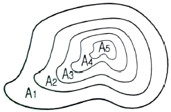
- 56000m3
- 50000m3
- 44400m3
- 38200m3
(정답률: 51%)
27. 전면에 달린 배토판의 좌, 우를 밑으로 10~40cm 정도 기울어지게 하여 경사면 굴착이나 도랑파기 작업에 유리한 도저는?
- 틸트 도저
- 앵글 도저
- 레이크 도저
- 스트레이트 도저
(정답률: 56%)
28. 터널계측에서 일상계측(A 계측) 항목이 아닌 것은?
- 내공변위 측정
- 천담침하 측정
- 터널 내 관찰조사
- 록볼트 축력 측정
(정답률: 55%)
29. 아래에서 설명하는 굴착공법의 명칭은?
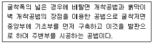
- 역타 공법
- 언더피닝 공법
- 아일랜드 공법
- 트렌치 컷 공법
(정답률: 63%)
30. 37800m3(완성된 토량)의 성토를 하는데 유용토가 30000m3(느슨한 토량)이 있다. 이때 부족한 토량은 본바닥 토량으로 얼마인가? (단, 흙의 종류는 사질토이고, 토량의 변화율은 L=1.25, C=0.90이다.)
- 12000m3
- 13800m3
- 16200m3
- 18000m3
(정답률: 58%)
31. 뉴매틱 케이슨(Pneumatic caisson)공법의 장점에 대한 설명으로 틀린 것은?
- 오픈 케이슨보다 침하공정이 빠르고 장애물 제거가 쉽다.
- 시공 시에 토질 확인 가능 및 지지력 측정이 가능하다.
- 압축공기를 이용하여 시공하므로 소규모 공사나 심도가 얕은 기초공사에 경제적이다.
- 지하수를 저하시키지 않으며, 히빙 현상 및 보일링 현상을 방지할 수 있으므로 인접 구조물의 침하 우려가 없다.
(정답률: 56%)
32. PERT 공정 관리 기법에 대한 설명으로 틀린 것은? (단, te: 기대시간, a: 낙관적 시간, m: 정상 시간, b: 지관적 시간)
- 경험이 없는 공사의 공기 단축을 목적으로 한다.
- 결합점(Node) 중심의 일정 계산을 한다.
- 3점 시간 견적법에 따른 기대시간은
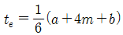
로 계산한다. - 3점 시간 견적법에서 시간 간의 관계는 비관적 시간 ＜ 정상 시간 ＜ 낙관적 시간이 성립 된다.
(정답률: 56%)
33. 이동식 작업차 또는 또는 가설용 트러스를 이용하여 교각의 좌, 우로 평형을 유지하면서 분할된 거더(길이 2~5m)를 순차적으로 시공하는 교량 가설공법은?
- FCM 공법
- FSM 공법
- ILM 공법
- MSS 공법
(정답률: 41%)
34. 딥퍼의 용량이 0.6m3, 딥퍼 계수가 0.85, 작업효율이 0.9, 흙의 토량변화율(L)이 1.2, 사이클 타임이 25초인 파워 셔블의 시간당 작업량은?
- 52.45m3/h
- 55.08m3/h
- 64.84m3/h
- 79.32m3/h
(정답률: 53%)
35. 터널 굴착공법 중 TBM공법의 특징에 대한 설명으로 틀린 것은?
- 낙석이 적다.
- 단면현상의 변경이 용이하다.
- 여굴이 거의 발생하지 않는다.
- 주변 암반에 대한 이완이 거의 없다.
(정답률: 64%)
36. 콘크리트 포장에서 아래에서 설명하는 현상은?
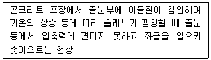
- scaling
- spalling
- blow up
- pumping
(정답률: 68%)
37. 댐의 그라우팅(grouting)에 관한 설명으로 옳은 것은?
- 커튼 그라우팅(curtain groutin)은 기초 암반의 변형성이나 강도를 개량하기 위하여 실시한다.
- 콘솔리데이션 그라우팅(consolidation grouting)은 기초 암반의 지내력 등을 개량하기 위하여 실시한다.
- 콘택트 그라우팅(contact grouting)은 시공이음으로 누수 방지를 위하여 실시한다.
- 림 그라우팅(rim grouting)은 콘크리트와 암반사이의 공극을 메우기 위하여 실시한다.
(정답률: 58%)
38. 암석의 발파이론에서 Hauser의 발파 기본식은? (단, L=폭약량, C=발파계수, W=최소 저항선이다.)
- L=C·W
- L=C·W2
- L=C·W3
- L=C·W4
(정답률: 62%)
39. 지하수 침강 최소깊이가 2m, 암거매립간격이 10m, 투수계수가 1.0×10-5cm/s일 때, 불투수층에 놓인 암거 1m당 1시간 동안의 배수량은 몇 리터(L)인가? (단, Donnan식에 의해 구하시오.)
- 0.58L
- 1.00L
- 1.58L
- 2.00L
(정답률: 20%)
40. 토량곡선(mass curve)에 대한 설명으로 틀린 것은?
- 곡선의 극소점은 성토에서 절토로 옮기는 점이고 곡선의 극대점은 절토에서 성토로 옮기는 점이다.
- 토량곡선과 기선에 평행한 선분이 만나는 두 점 사이의 성토량 및 절토량은 균형을 이룬다.
- 절토부분에서는 곡선이 위로 향하고 성토부분에서는 곡선이 아래로 향한다.
- 토량곡선이 기선의 위에서 끝나면 토량이 모자란 경우이다.
(정답률: 61%)
3과목: 건설재료 및 시험
41. 목재 시험편의 질량을 측정한 결과 건조 전 질량이 30g, 건조 후 질량이 25g 일 때 이 목재의 함수율은?
- 10%
- 15%
- 20%
- 25%
(정답률: 64%)
42. 포틀랜드 시멘트(KS L 5201)에 규정되어 있는 보통 포틀랜드 시멘트의 응결시간으로 옳은 것은?
- 초결 10분 이상, 종결 1시간 이하
- 초결 30분 이상, 종결 1시간 이하
- 초결 60분 이상, 종결 10시간 이하
- 초결 90분 이상, 종결 10시간 이하
(정답률: 67%)
43. 콘크리트용 혼화재로 사용되는 플라이 애시가 콘크리트의 성질에 미치는 영향에 대한 설명으로 틀린 것은?
- 콘크리트의 화학저항성이 향상된다.
- 포졸란 반응에 의해 콘크리트의 수밀성이 향상된다.
- 표면이 매끄러운 구형 입자로 되어 있어 콘크리트의 워커빌리티가 향상된다.
- 포졸란 반응에 의해 콘크리트의 중성화 억제효과가 향상된다.
(정답률: 47%)
44. 인공 경량골재에 대한 설명으로 옳은 것은?
- 밀도는 입경에 따라 다르며 입경이 클수록 작다.
- 인공 경량골재에는 응회암, 경석화산자갈 등이 있다.
- 인공 경량골재의 품질을 밀도로 나타낼 때 절대건조상태의 밀도를 사용한다.
- 인공 경량골재는 순간 흡수량이 비교적 적기 때문에 컨시스턴시를 상승시킨다.
(정답률: 36%)
45. 다음 중 재료에 작용하는 반복하중과 가장 밀접한 관계가 있는 성질은?
- 피로(fatigue)
- 크리프(creep)
- 응력완화(relaxation)
- 건조수축(dry shrinkage)
(정답률: 68%)
46. 다음 중 목면, 마사, 폐지 등을 물에서 혼합하여 원지를 만든 후 여기에 스트레이트 아스팔트를 침투시켜 만든 것으로 아스팔트 방수의 중간층재로 사용되는 것은?
- 아스팔트 타일(tile)
- 아스팔트 펠트(felt)
- 아스팔트 시멘트(cement)
- 아스팔트 콤파운드(compound)
(정답률: 51%)
47. 콘크리트용 골재가 갖추어야 할 성질에 대한 설명으로 틀린 것은?
- 물리, 화학적으로 안정하고 내구성이 클 것
- 크고 작은 알맹이의 혼합이 적당할 것
- 깨끗하고 불순물이 섞이지 않을 것
- 골재의 모양은 모나고 길어야 할 것
(정답률: 75%)
48. 어떤 석재를 건조기(1⑤±5℃) 속에서 24시간 건조시킨 후 질량을 측정해보니 1000g이었다. 이것을 완전히 흡수시켜 물속에서 질량을 측정해보니 800g 이었고 물속에서 꺼내 표면을 잘 닦고 질량을 측정해보니 1200g이었다면 이 석재의 표면 건조 포화 상태의 비중은?
- 1.50
- 2.50
- 2.75
- 3.00
(정답률: 28%)
49. 골재의 조립률 및 입도에 대한 설명으로 틀린 것은?
- 콘크리트용 잔골재의 조립률은 일반적으로 2.3~3.1 범위에 해당되는 것이 좋다.
- 1개의 조립률에는 무수한 입도곡선이 존재하지만, 1개의 입도곡선에는 1개의 조립률이 존재한다.
- 골재의 입도를 수량적으로 나타내는 한 방법으로 조립률이 있으며, 표준체 12개를 1조로 하여 체가름 시험을 한다.
- 골재는 작은 입자와 굵은 입자가 적당히 혼합되어 있을 때 입자의 크기가 균일한 경우보다 워커빌리티면에서 유리하다.
(정답률: 42%)
50. 토목섬유 중 직포형과 부직포형이 있으며 분리, 배수, 보강, 여과기능을 갖고 오탁방지망, drain board, pack drain 포대, geo web 등에 사용되는 자재는?
- 지오네트
- 지오그리드
- 지오맴브레인
- 지오텍스타일
(정답률: 50%)
51. 포틀랜드 시멘트의 클링커에 대한 설명으로 틀린 것은?
- C3A는 수화속도가 대단히 빠르고 발열량이 크며 수축도 크다.
- 클링커의 화합물 중 C3S 및 C2S는 시멘트 강도의 대부분을 지배한다.
- 클링커는 단일조성의 물질이 아니라 C3S, C2S, C3A, C4AF의 4가지 주요화합물로 구성되어 있다.
- 클링커의 화합물 중 C2S가 많고 C3S가 적으면 시멘트의 강도 발현이 빨라져 초기강도가 향상된다.
(정답률: 62%)
52. 시멘트의 분말도와 물리적 성질에 대한 설명으로 틀린 것은?
- 분말도가 높을수록 블리딩이 많게 된다.
- 분말도가 높을수록 콘크리트의 초기 강도가 크다.
- 분말도가 높은 시멘트는 작업이 용이한 콘크리트를 얻을 수 있다.
- 분말도가 높으면 수축률이 커지기 쉽고 콘크리트에 균열이 발생할 우려가 있다.
(정답률: 44%)
53. 도로의 표층공사에서 사용되는 가열아스팔트 혼합물의 안정도는 어떤 시험으로 판정하는가?
- 마샬 시험
- 엥글러 시험
- 박막가열 시험
- 레드우드 시험
(정답률: 55%)
54. 석재의 성질에 대한 설명으로 틀린 것은?
- 대리석은 강도는 강하나 풍화되기 쉽다.
- 응회암은 내화성이 크나 강도 및 내구성은 작다.
- 안산암은 강도가 크고 가공이 용이하므로 조각에 적당하다.
- 화강암은 강도, 내구성 및 내화성이 크므로 조각 등에 적당하다.
(정답률: 66%)
55. 콘크리트용 화학 혼화제(KS F 2560)에서 규정하고 있는 화학 혼화제의 요구성능 항목이 아닌 것은?
- 감수율
- 압축강도비
- 침입도 지수
- 블리딩양의 비
(정답률: 46%)
56. 철근 콘크리트용 봉강(KS D 3504)에서 기호가 SD300으로 표시된 철근을 설명한 것으로 옳은 것은?
- 항복점이 300MPa 이상인 이형철근
- 항복점이 300MPa 이상인 원형철근
- 인장강도가 300MPa 이상인 이형철근
- 인장강도가 300MPa 이상인 원형철근
(정답률: 41%)
57. 콘크리트에서 AE제를 사용하는 목적으로 틀린 것은?
- 워커빌리티를 개선시키기 위해
- 철근과의 부착력을 증진시키기 위해
- 재료의 분리, 블리딩을 감소시키기 위해
- 동결융해에 대한 저항성을 증가시키기 위해
(정답률: 65%)
58. 다음 중 폭발력이 가장 강하고 수중에서도 폭발할 수 있는 폭약은?
- 분상 다이너마이트
- 교질 다이너마이트
- 규조토 다이너마이트
- 스트레이트 다이너마이트
(정답률: 59%)
59. 골재의 실적률 시험에서 아래와 같은 결과를 얻었을 때 골재의 공극률은?
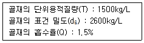
- 41.4%
- 42.3%
- 43.6%
- 57.7%
(정답률: 22%)
60. 스트레이트 아스팔트와 비교하여 고무혼입 아스팔트(rubberized asphalt)의 일반적인 성질에 대한 설명으로 옳은 것은?
- 탄성이 작다.
- 응집성이 작다.
- 감온성이 작다.
- 마찰계수가 작다.
(정답률: 66%)
4과목: 토질 및 기초
61. 흙 시료의 전단시험 중 일어나는 다일러턴시(Dilatancy) 현상에 대한 설명으로 틀린 것은?
- 흙이 전단될 때 전단면 부근의 흙입자가 재배열되면서 부피가 팽창하거나 수축하는 현상을 다일러턴시라 부른다.
- 사질토 시료는 전단 중 다일러턴시가 일어나지 않는 한계의 간극비가 존재한다.
- 정규압밀 점토의 경우 정(+)의 다일러턴시가 일어난다.
- 느슨한 모래는 보통 부(-)의 다일러턴시가 일어난다.
(정답률: 36%)
62. 어떤 지반에 대한 흙의 입도분석결과 곡률계수(Cg)는 1.5, 균등계수(Cu)는 15이고 입자는 모난 형상이었다. 이때 Dunham의 공식에 의한 흙의 내부마찰각(ø)의 추정치는? (단, 표준관입시험 결과 N치는 10이었다.)
- 25°
- 30°
- 36°
- 40°
(정답률: 38%)
63. 다짐에 대한 설명으로 틀린 것은?
- 다짐에너지는 래머(rammer)의 중량에 비례한다.
- 입도배합이 양호한 흙에서는 최대건조 단위중량이 높다.
- 동일한 흙일지라도 다짐기계에 따라 다짐효과는 다르다.
- 세립토가 많을수록 최적함수비가 감소한다.
(정답률: 52%)
64. 포화단위중량(γsat)이 19.62kN/m3인 사질토로 된 무한사면이 20°로 경사져 있다. 지하수위가 지표면과 일치하는 경우 이 사면의 안전율이 1이상이 되기 위해서는 흙의 내부마찰각이 최소 몇 도 이상이어야 하는가? (단, 물의 단위중량은 9.81kN/m3이다.)
- 18.21°
- 20.52°
- 36.06°
- 45.47°
(정답률: 47%)
65. 그림에서 지표면으로부터 깊이 6m에서의 연직응력(σv)과 수평응력(σh)의 크기를 구하면? (단, 토압계수는 0.6이다.)
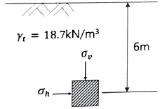
- σv=87.3kN/m2, σh=52.4kN/m2
- σv=95.2kN/m2, σh=57.1kN/m2
- σv=112.2kN/m2, σh=67.3kN/m2
- σv=123.4kN/m2, σh=74.0kN/m2
(정답률: 50%)
66. 압밀시험에서 얻은 e-logP곡선으로 구할 수 있는 것이 아닌 것은?
- 선행압밀압력
- 팽창지수
- 압축지수
- 압밀계수
(정답률: 32%)
67. 시료채취 시 샘플러(sampler)의 외경이 6cm, 내경이 5.5cm일 때, 면적비는?
- 8.3%
- 9.0%
- 16%
- 19%
(정답률: 41%)
68. 그림에서 a-a‘면 바로 아래의 유효응력은? (단, 흙의 간극비(e)는 0.4, 비중(Gs)은 2.65, 물의 단위중량은 9.81kN/m3이다.)
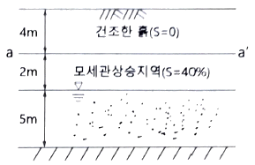
- 68.2kN/m2
- 82.1kN/m2
- 97.4kN/m2
- 102.1kN/m2
(정답률: 29%)
69. 도로의 평판재하 시험에서 시험을 멈추는 조건으로 틀린 것은?
- 완전히 침하가 멈출 때
- 침하량이 15mm에 달할 때
- 재하 응력이 지반의 항복점을 넘을 때
- 재하 응력이 현장에서 예상할 수 있는 가장 큰 접지 압력의 크기를 넘을 때
(정답률: 55%)
70. 아래와 같은 상황에서 강도정수 결정에 적합한 삼축압축시험의 종류는?
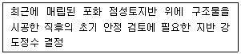
- 비압밀 비배수시험(UU)
- 비압밀 배수시험(UD)
- 압밀 비배수시험(CU)
- 압밀 배수시험(CD)
(정답률: 47%)
71. 베인전단시험(vane shear test)에 대한 설명으로 틀린 것은?
- 베인전단시험으로부터 흙의 내부마찰각을 측정할 수 있다.
- 현장 원위치 시험의 일종으로 점토의 비배수 전단강도를 구할 수 있다.
- 연약하거나 중간 정도의 점성토 지반에 적용된다.
- 십자형 베인(vane)을 땅 속에 압입한 후, 회전모멘트를 가해서 흙이 원통형으로 전단 파괴될 때 저항모멘트를 구함으로써 비배수 전단강도를 측정하게 된다.
(정답률: 45%)
72. 연약지반 개량공법 중 점성토지반에 이용되는 공법은?
- 전기충격 공법
- 폭파다짐 공법
- 생석회말뚝 공법
- 바이브로플로테이션 공법
(정답률: 54%)
73. 주동토압을 PA, 수동토압을 PP, 정지토압을 PO라 할 때 토압의 크기를 비료한 것으로 옳은 것은?
- PA ＞ Psub>P ＞ PO
- Psub>P ＞ PO ＞ PA
- Psub>P ＞ PA ＞ PO
- PO ＞ PA ＞ Psub>P
(정답률: 44%)
74. 흙의 내부마찰각이 20°, 점착력이 50kN/m2, 습윤단위중량이 17kN/m3, 지하수위 아래 흙의 포화단위중량이 19kN/m3일 때 3m×3m 크기의 정사각형 기초의 극한지지력을 Terzaghi의 공식으로 구하면? (단, 지하수위는 기초바닥 깊이와 같으며 물의 단위중량은 9.81kN/m3이고, 지지력계수 Nc=18, Nγ=5, Nq=7.5이다.)
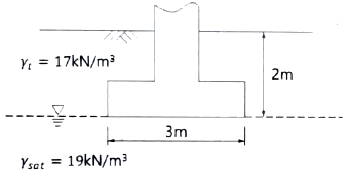
- 1231.24 kN/m2
- 1337.31 kN/m2
- 1480.14 kN/m2
- 1540.42 kN/m2
(정답률: 25%)
75. 그림과 같은 지반내의 유선망이 주어졌을 때 폭 10m에 대한 침투 유량은? (단, 투수계수(K)는 2.2×10-2cm/s이다.)
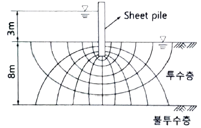
- 3.96 cm3/s
- 39.6 cm3/s
- 396 cm3/s
- 3960 cm3/s
(정답률: 33%)
76. 어떤 모래층의 간극비(e)는 0.2, 비중(Gs)은 2.60이었다. 이 모래가 분사현상(Quick Sand)이 일어나는 한계 동수경사(ic)는?
- 0.56
- 0.95
- 1.33
- 1.80
(정답률: 43%)
77. 20개의 무리말뚝에 있어서 효율이 0.75이고, 단항으로 계산된 말뚝 한 개의 허용지지력이 150kN일 때 무리말뚝의 허용지지력은?
- 1125kN
- 2250kN
- 3000kN
- 4000kN
(정답률: 51%)
78. 연약지반 위에 성토를 실시한 다음, 말뚝을 시공하였다. 시공 후 발생될 수 있는 현상에 대한 설명으로 옳은 것은?
- 성토를 실시하였으므로 말뚝의 지지력은 점차 증가한다.
- 말뚝을 암반층 상단에 위치하도록 시공하였다면 말뚝의 지지력에는 변함이 없다.
- 압밀이 진행됨에 따라 지반의 전단강도가 증가되므로 말뚝의 지지력은 점차 증가된다.
- 압밀로 인해 부주면마찰력이 발생되므로 말뚝의 지지력은 감소된다.
(정답률: 52%)
79. 흙의 분류법인 AASHTO분류법과 통일분류법을 비교·분석한 내용으로 틀린 것은?
- 통일분류법은 0.075mm체 통과율 35%를 기준으로 조립토와 세립토로 분류하는데 이것은 AASHTO분류법보다 적합하다.
- 통일분류법은 입도분포, 액성한계, 소성지수 등을 주요 분류인자로 한 분류법이다.
- AASHTO분류법은 입도분포, 군지수 등을 주요 분류인자로 한 분류법이다.
- 통일분류법은 유기질토 분류방법이 있으나 AASHTO분류법은 없다.
(정답률: 35%)
80. 상·하층이 모래로 되어 있는 두께 2m의 점토층이 어떤 하중을 받고 있다. 이 점토층의 투수계수가 5×10-7cm/s, 체적변화계수(mv)가 5.0cm2/kN일때 90% 압밀에 요구되는 시간은? (단, 물의 단위중량은 9.81kN/m3이다.)
- 약 5.6일
- 약 9.8일
- 약 15.2일
- 약 47.2일
(정답률: 38%)